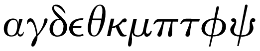
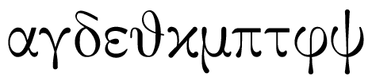

Fuentes griegas en matemáticas
Tipografía y notaciones científicas
Versión 1.0. 2011-03-11.
Es indudable que las letras griegas son parte esencial del formalismo matemático, y al igual que las letras latinas pueden presentarse en multitud de variaciones estilísticas. Su evolución, sin embargo, es más tardía, y su emancipación completa de las formas manuscritas no llegó hasta el siglo XVIII.
Hasta hace no mucho, se podían apreciar dos tendencias claras en la elección de letras griegas para textos científicos: 1) en los países anglosajones se preferían las forma cursivas, en especial la familia Porson; 2) en la Europa continental se preferían las debidas a Firmin Didot y similares.
Porson fue un calígrafo inglés del siglo XVIII reconocido por la belleza de su escritura. A fines de ese siglo, recibió el encargo de la Universidad de Cambridge de preparar un fuente basada en su letra. Una reciente y excelente recuperación es la debida a la Sociedad Griega de Fuentes, aunque otras fuentes identificadas como Porson pueden presentar ligeras variaciones (sobre todo en la psi):

Los usuarios de TeX observarán que las letras griegas por defecto están basadas en la Porson.
En la Europa continental se preferían las verticales, debidas al francés Fermin Didot y más o menos de la misma época. Sin embargo, se basan en los ideales neoclásicos de simetría, más que en las formas manuscritas:

Hoy en Francia siguen siendo habituales en textos a los que se quiere dar un aire clásico.
En la actualidad, por desgracia, se recurre a menudo a la fuente Symbol, que también tiene letras griegas, pero su diseño está lejos de ser satisfactorio y la carencia de cursivas y negritas empeora la situación. Hoy hay disponibles muchas fuentes con letras griegas y por tanto es mejor no tomarlas de Symbol.
No quiero dejar de mencionar una de las primeras fuentes griegas creadas, de Arnaldo Guillén de Brocar, para la biblia políglota de Alcalá de Henares, de principios del siglo XVI. No se emplea en textos matemáticos, pero es de justicia recordar que España no estaba al margen de las creaciones tipográficas. Sigue siendo un modelo para fuentes griegas incisas de la actualidad.
Más…

Enlaces
- Sociedad Griega de Fuentes
- Estilos de TeX para las fuentes de la Sociedad Griega de Fuentes